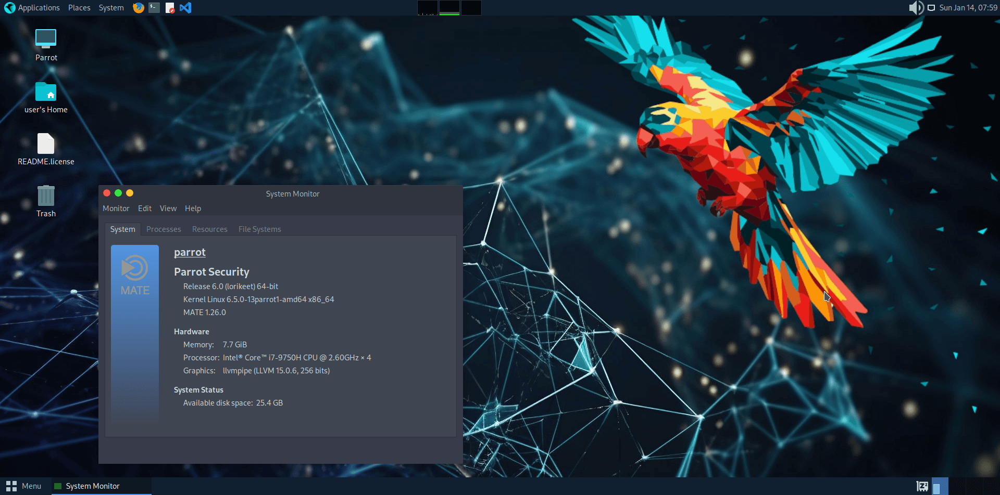

Parrot OS

Parrot OS is a Debian-based security and privacy-focused distro. It comes in two main editions: a Security edition packed with pentesting tools for professionals, and a lighter Home edition for everyday privacy-conscious use. Compared to Kali, Parrot is more lightweight and better suited for daily driving alongside security work.
Desktop Environment
MATE (Home) / KDE (Security)
Package Manager
APT
Latest Release
6.2
Init System
systemd
Support Cycle
Rolling
Architecture
x86_64, ARM64
Key Features
- AnonSurf, route traffic through Tor for anonymity with one click
- Privacy-hardened kernel and system settings out of the box
- Security edition includes pentesting tools without Kali's bloat
- Lightweight Home edition usable as a daily driver
- Lower RAM footprint than Kali Linux
- ARM64 support for Raspberry Pi and similar devices